Upcoming Festival
Dashain 2025
Nepal's biggest and most auspicious festival celebrating the victory of good over evil.
42
Days
18
Hours
33
Minutes
10
Seconds
Experience the 15-day celebration marking the triumph of Goddess Durga over the demon Mahishasura. From Ghatasthapana to Vijaya Dashami, witness ancient rituals, family reunions, and vibrant cultural expressions across Nepal.
Learn More About Dashain
Nepali Festival Calendar 2025
January
Maghe Sankranti (Jan 14)
February
Losar (Feb 10-12)
Basanta Panchami (Feb 14)
March
Holi (Mar 14)
Ghode Jatra (Mar 25)
April
Nepali New Year (Apr 13)
Bisket Jatra (Apr 10-17)
May
Buddha Jayanti (May 12)
June
Ropai Jatra (Jun 29)
July
Nag Panchami (Jul 20)
Guru Purnima (Jul 21)
August
Janai Purnima (Aug 19)
Teej (Aug 28-30)
September
Indra Jatra (Sep 15-22)
Gai Jatra (Sep 3)
October
Dashain (Oct 2-16)
November
Tihar (Nov 10-14)
Chhath Puja (Nov 17-20)
December
Yomari Punhi (Dec 15)
Tamu Losar (Dec 30)
Major Festivals of Nepal

October (Kartik)
15 Days
Dashain Festival
Experience Nepal's biggest festival celebrating victory of good over evil with unique traditions.
Learn About Dashain
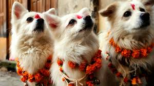
October/November
5 Days
Tihar (Diwali)
The festival of lights honoring Goddess Laxmi, animals, and brotherly bonds with beautiful illuminations.
Learn About Tihar
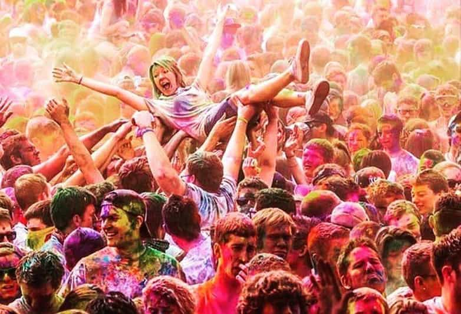
March (Falgun/Chaitra)
1-2 Days
Holi
The colorful spring festival where people spray colored powders and water to celebrate the triumph of good.
Learn About Holi
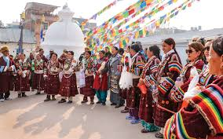
February/March
3 Days
Losar
Tibetan New Year celebrated by Sherpa, Tamang, and Tibetan communities with traditional ceremonies.
Learn About Losar
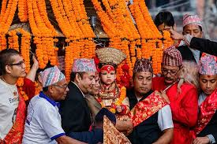
September (Bhadra/Ashwin)
8 Days
Indra Jatra
Kathmandu's most important street festival honoring rain god Indra with chariot processions and mask dances.
Learn About Indra Jatra
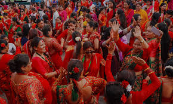
August/September
3 Days
Teej
Women's festival marked by fasting, dancing in red sarees, and prayers for marital happiness and prosperity.
Learn About Teej
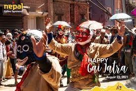
August/September
1 Day
Gai Jatra
A festival of cows that honors those who died in the previous year through humor, satire, and processions.
Learn About Gai Jatra
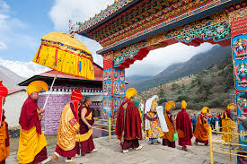
October/November
19 Days
Mani Rimdu
Sacred Buddhist festival in the Everest region featuring colorful masked dances, mandalas, and fire ceremonies.
Learn About Mani Rimdu

August
1 Day
Janai Purnima
Sacred thread festival where Hindu men change their sacred threads and everyone ties colorful threads on their wrists.
Learn About Janai Purnima
Dashain Festival

Dashain is Nepal's longest and most auspicious festival, celebrated for 15 days during September-October. It symbolizes the victory of good over evil, specifically commemorating Goddess Durga's defeat of the demon Mahishasura.
Key Celebrations:
- Ghatasthapana (Day 1): The beginning of Dashain when barley seeds are sown in soil and sand mixture in a sacred spot in homes.
- Fulpati (Day 7): Sacred flowers, grasses, and twigs are brought from Gorkha to Kathmandu in a ceremonial procession.
- Maha Ashtami (Day 8): The fiercest day of goddess worship, when animal sacrifices traditionally take place.
- Maha Navami (Day 9): The last day of Navaratri with special military ceremonies and temple sacrifices.
- Vijaya Dashami (Day 10): The main celebration day when elders place tika (red vermilion mixed with rice and yogurt) on the foreheads of younger relatives and give blessings.
Dashain brings families together across Nepal, with people traveling from around the world to reunite with loved ones. The festival is characterized by kite flying, bamboo swings (ping), feasting, and new clothes. Public offices close for a week, and the atmosphere is festive throughout the country.
Cultural Significance:
Beyond the religious ceremonies, Dashain represents renewal, family bonds, and community harmony. It marks a time for forgiveness, new beginnings, and acknowledging the triumph of virtue. The festival showcases Nepal's rich cultural traditions and reflects the deep religious devotion of its people.
Back to Festivals
Tihar (Festival of Lights)
Tihar, also known as Deepawali or the Festival of Lights, is celebrated for five days in October/November. Unlike many festivals, Tihar honors both deities and animals that maintain a close relationship with humans.
Five Days of Tihar:
- Kaag Tihar (Day 1): Dedicated to crows, the messengers of Yama (god of death), who are fed sweet offerings.
- Kukur Tihar (Day 2): Dogs are worshipped and adorned with garlands, tika, and given special treats for their loyalty and service.
- Gai Tihar & Laxmi Puja (Day 3): Morning worship of cows, followed by evening veneration of Goddess Laxmi. Homes are illuminated with oil lamps and candles to welcome the goddess of wealth.
- Goru Tihar/Mha Puja (Day 4): Oxen are honored in some communities, while Newars celebrate Mha Puja (self-worship) and their New Year.
- Bhai Tika (Day 5): Sisters place colorful tikas on their brothers' foreheads, praying for their prosperity and long life, while brothers give gifts and promise protection.
Tihar transforms Nepal into a spectacular display of lights with oil lamps, candles, and electric lights adorning homes and businesses. The festival includes traditional music called Deusi and Bhailo, where groups sing from house to house and receive money, food, and blessings in return.
Unique Features:
Tihar stands out for its inclusion of animal worship, recognition of human-animal bonds, and its beautiful illuminations. The rangoli (colorful floor designs) made from colored rice, flour, and flower petals add vibrant artistry to the celebration, making it one of Nepal's most visually stunning festivals.
Back to Festivals
Holi - Festival of Colors
Holi, celebrated in March (Falgun/Chaitra), is one of Nepal's most playful and vibrant festivals. It marks the arrival of spring and celebrates the triumph of good over evil, specifically recalling the story of Holika and Prahlad from Hindu mythology.
Celebration Style:
- Colors and Water: People throw colored powders (abir) and spray colored water on friends, family, and even strangers in a joyful exchange.
- Regional Variations: In Kathmandu Valley, Holi is celebrated for one day, while in Terai regions, it lasts two days, beginning with Holika Dahan (bonfire).
- Community Gathering: People gather in public spaces, form musical processions, and visit homes of friends and relatives to share in the revelry.
While traditionally a Hindu festival, Holi in Nepal has transcended religious boundaries to become a celebration enjoyed by people of all faiths. It's particularly popular among young people who organize water fights and color parties.
Cultural Significance:
Holi symbolizes the victory of devotion (Prahlad) over ego (Holika), the arrival of spring after winter, and the blossoming of love. The festival breaks down social barriers — during Holi, distinctions of age, gender, status, and caste temporarily dissolve in the shared joy of celebration. It's a time when people forget past grievances and renew relationships with a colorful embrace.
Back to Festivals
Losar - Tibetan New Year
Losar marks the Tibetan New Year and is celebrated by Nepal's mountain communities including Sherpas, Tamangs, and Tibetans. Observed for three days in February/March, it combines ancient Bon traditions with Buddhist practices.
Key Celebrations:
- Preparation (Gutor): In the days before Losar, homes are thoroughly cleaned, and special food items are prepared, including Guthuk (dumpling soup) and Khapse (deep-fried pastries).
- Day One (Lama Losar): Focused on religious ceremonies at monasteries and homes, with offerings to deities and spiritual teachers.
- Day Two (Gyalpo Losar): The king's Losar, devoted to community celebrations and secular gatherings.
- Day Three: Dedicated to visiting friends and family, exchanging greetings and gifts.
Losar festivities feature colorful prayer flags, butter sculptures, masked dances at monasteries, and the creation of torma (ritual cake offerings). Communities gather to perform traditional dances, share meals, and participate in various games and competitions.
Cultural Significance:
Losar represents purification and fresh beginnings. The festivities reflect the deep Buddhist influences in Nepal's mountain regions and showcase the unique cultural heritage of these communities. This celebration emphasizes harmony within families and communities while renewing spiritual commitments for the coming year.
Back to Festivals
Festival Photo Gallery
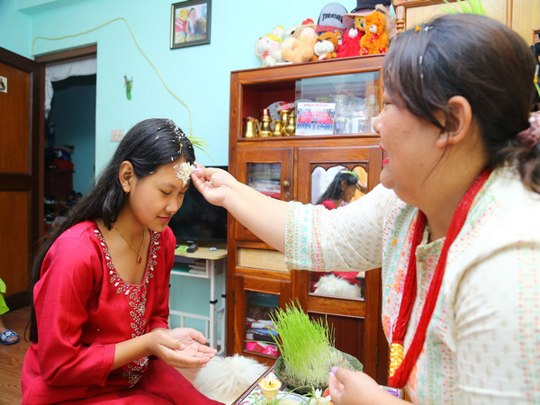
Dashain tika ceremony in a Nepali family
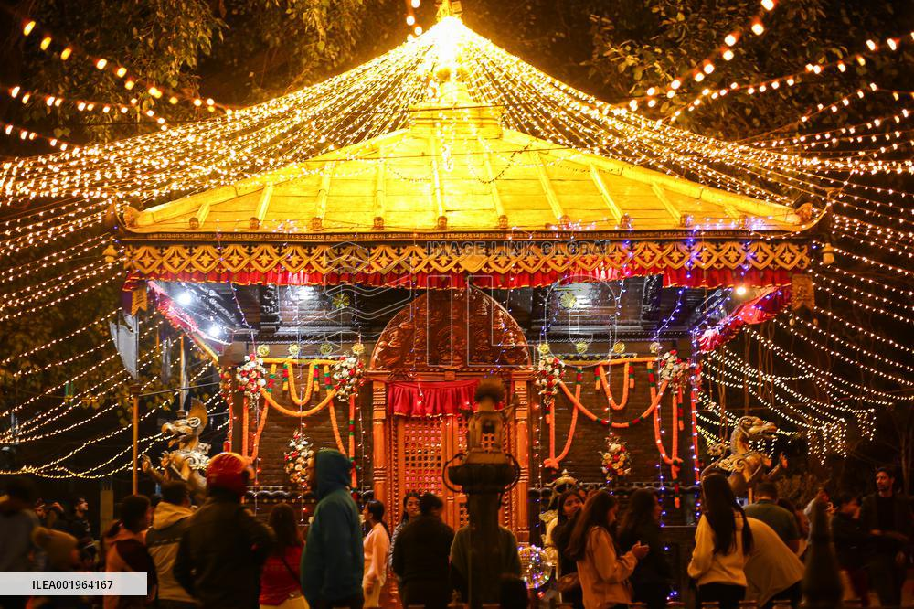
Home decorated with lights during Tihar festival
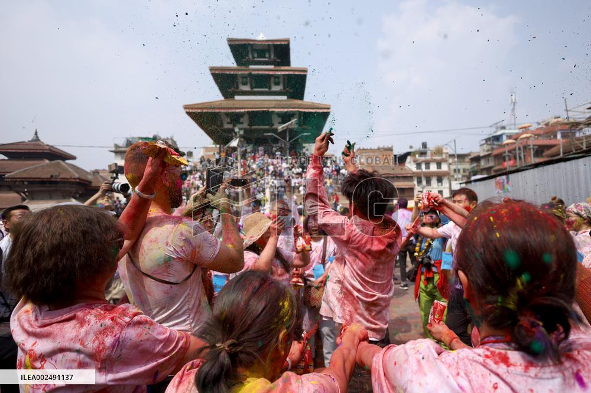
Young people celebrating Holi with vibrant colors
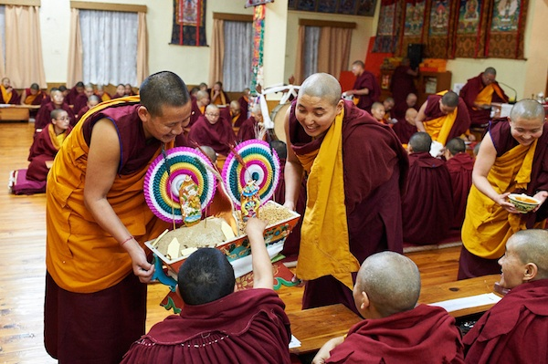
Monks performing rituals during Losar
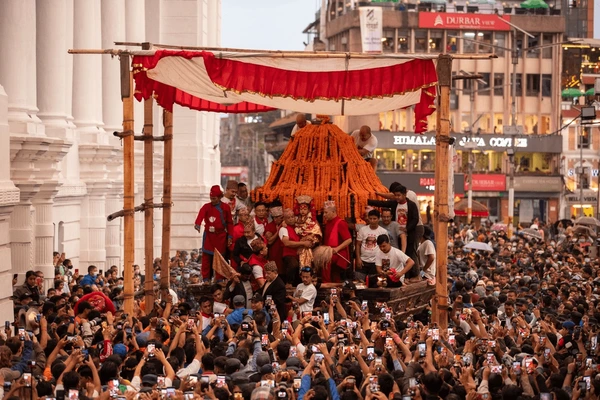
Kumari chariot procession at Indra Jatra
Women in red sarees celebrating Teej
Festival Etiquette for Visitors
Dress Appropriately
Wear modest clothing when visiting temples or participating in religious ceremonies. Cover shoulders and knees, and be prepared to remove shoes at religious sites.
Ask Before Photographing
Always ask permission before taking photos of ceremonies, rituals, or people in traditional dress. Some ceremonies may prohibit photography.
Respect Sacred Objects
Don't touch religious objects, offerings, or ceremonial items unless invited to do so by a local participant.
Follow Local Customs
Observe how locals behave and follow their lead. During Holi, for example, wear clothes you don't mind getting colored.
Eat with Right Hand
If offered festival food, eat using your right hand as the left hand is considered unclean in Nepali culture.
Be Mindful of Space
During crowded festivals, be respectful of locals who are there for religious purposes rather than tourism.
Plan Your Festival Visit
Make the most of your journey to experience Nepal's vibrant festivals with these helpful tips and resources.
Best Time to Visit
October-November offers the most significant festivals (Dashain and Tihar) with pleasant weather. March-April features colorful spring celebrations including Holi.
Accommodation
Book accommodations well in advance for major festivals, especially in Kathmandu Valley. Consider homestays for an authentic festival experience with local families.
Transportation
Public transportation is limited during major festivals. Consider hiring private vehicles or joining organized tours during peak festival times.
Contact a Festival Travel Specialist
Stay Updated on Nepal's Festivals
Subscribe to our newsletter for festival dates, cultural insights, and travel tips to experience Nepal's vibrant celebrations.